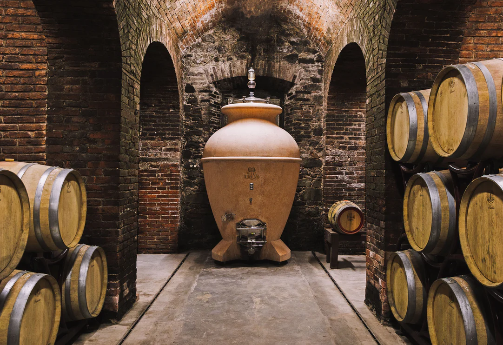

Los primeros viñedos fueron plantados por Don Manuel González a finales del siglo XIX, con la intención de crear vinos que reflejaran el carácter de la tierra andaluza.
La Historia de Bodegas González
Nuestra historia está marcada por la tradición, la pasión familiar y la evolución constante.
Orígenes familiares
Evolución y crecimiento
Durante el siglo XX, las siguientes generaciones ampliaron la bodega y modernizaron las técnicas de vinificación, manteniendo siempre la esencia artesanal.
En los años 70 comenzó la exportación internacional, consolidando a la marca como referente de calidad.
Línea del tiempo
- 1895 – Fundación de la bodega.
- 1920 – Primera ampliación.
- 1972 – Inicio de exportaciones.
- 1998 – Modernización completa.
- 2020 – Apertura al enoturismo.
Hitos importantes
Algunos momentos clave en nuestra trayectoria:
| Año | Evento | Descripción |
|---|---|---|
| 1895 | Fundación | Inicio de la producción artesanal. |
| 1972 | Exportación | Expansión a Europa. |
| 1998 | Modernización | Implementación de tecnología avanzada. |
| 2020 | Enoturismo | Apertura al público y experiencias de cata. |

Nuestro legado
Hoy seguimos combinando tradición e innovación para producir vinos que reflejan nuestra historia y nuestra tierra.